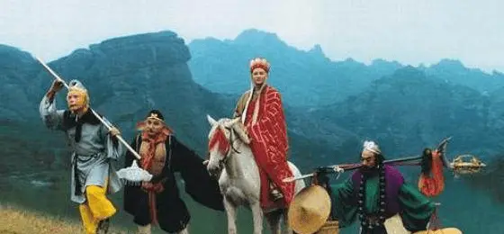

About Monkey King
The Monkey King, Sun Wukong, is a powerful figure from Journey to the West. Known for his strength, shape-shifting, and rebellious nature, he helps a monk retrieve sacred texts. He symbolizes chaos and transformation in Chinese folklore.
Monkey King and his family members
Monkey King's Charesteristic
- Mischievous – Playful and rebellious, often causing trouble.
- Powerful – Possesses immense strength and magical abilities.
- Loyal – Ultimately devoted to his mission and companions.
Monkey King's family members
The Monkey King, Sun Wukong, was born from a stone and has no traditional family. However, in Journey to the West, he forms close bonds with key companions, such as Tang Sanzang (the monk), Zhu Bajie (Pigsy), and Sha Wujing (Sandy). These characters become his surrogate family during their journey to retrieve sacred Buddhist scriptures. Each member contributes unique skills, and together they share a strong sense of loyalty and teamwork. Click on the links below to read more about them :